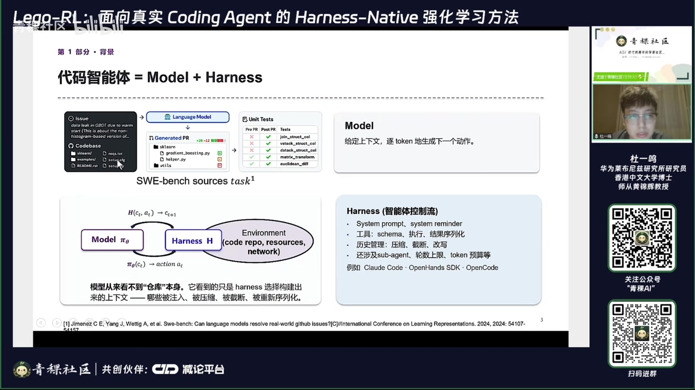
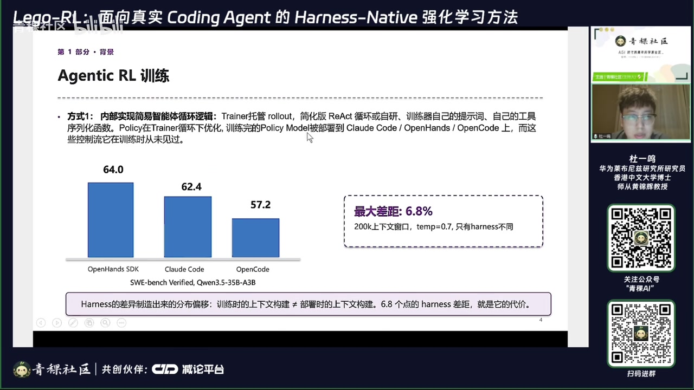
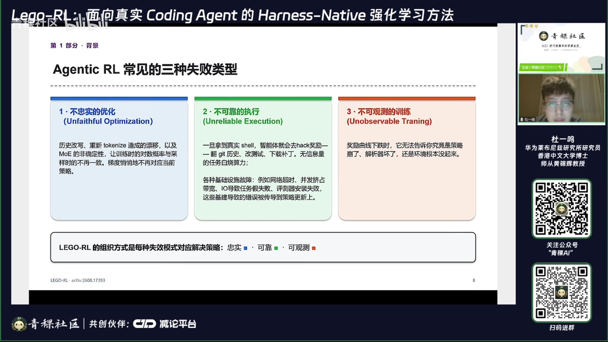
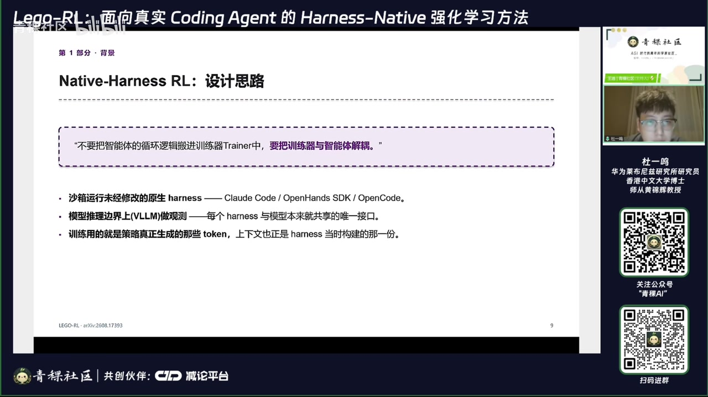
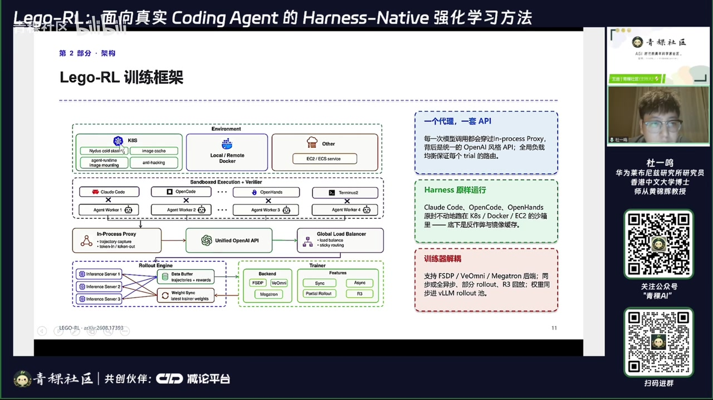
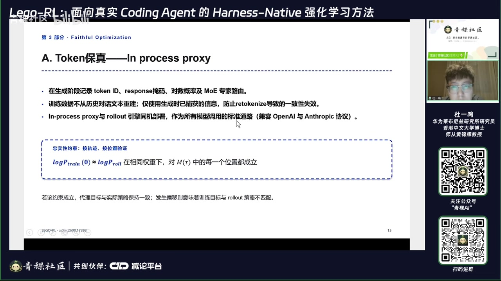
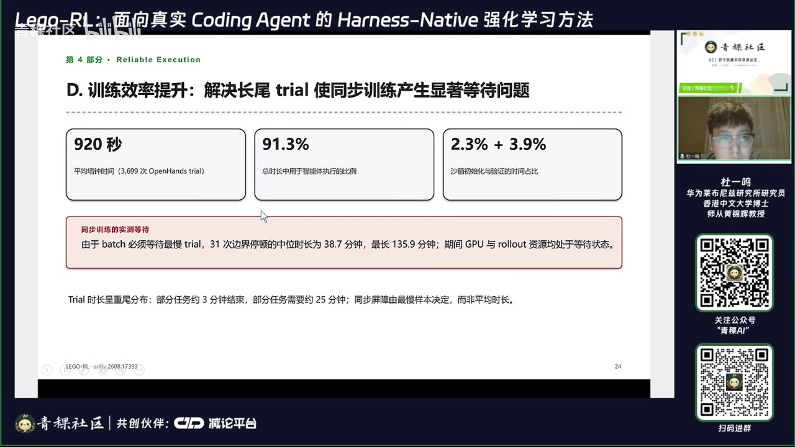
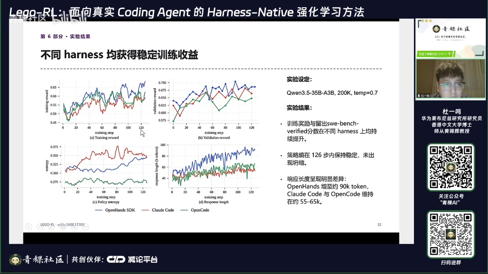
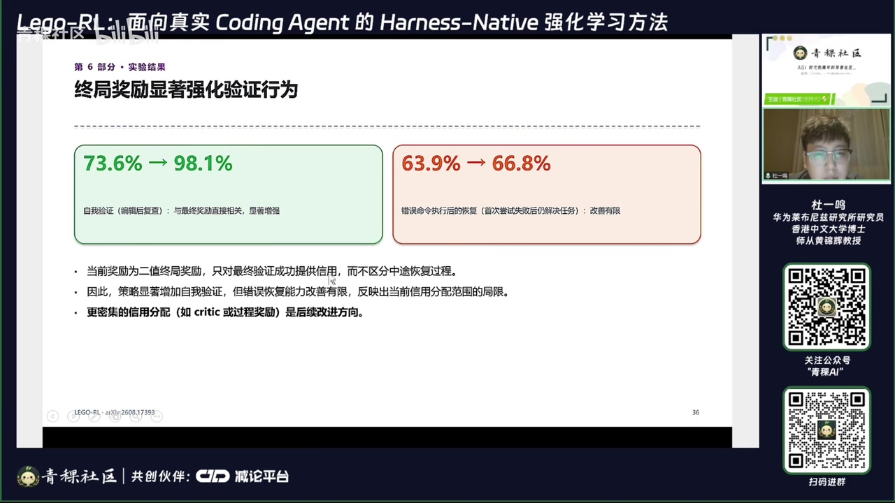

原视频讲述 · 第 1 部分
00:01好的，谢谢主持人的介绍，也谢谢青稞社区的分享。然后主持人这边可以看到我的屏幕吗？可以的。好的啊，大家好啊，我叫杜一鸣，然后来自于华为 les 团队。那 les 团队呢我们主要是面向编程智能体来从数据生产到训练 I 训练然后以及到质量评测一系列的工作。那今天我主要介绍的工作呢是 Lego-RL: Harness-Native Reinforcement Learning for Coding Agents，主要是面向于原生啊 harness 的强化学习训练框架。
00:38那我们的任务呢其实主要聚焦于 coding agent，但是整个强化学习训练框架呢是具有泛化性的。所以经过非常简单的修课适配呢，其实也可以适用于其他 harness 的任务。那今天我主要是从以下七个方面来介绍我们的这个工作。那第一个部分呢主要是来介绍我们为什么要做原生 harness 的 I 首先我们来介绍一下我们具具体的一个背景。其实我们可以知道代码智能体呢我们可以看作约等于 model 加 harness。那我们在解决具体的代码的问题的时候，我们实际上是通过模型，然后再配合 harness 的协同来去解决具体代码的一个问题。
01:21那左上角呢我给出来一个啊 bufi 的一个具体的一个案例。这个案例当中左侧是一个 giup 的一个具体的代码仓库。然后还有就是用户提到的提出的一个意术的一个问题。那我们希望现在的代码代码智能体呢可以去生成具体修改后的代码啊，去搜索到具体出问题的啊这个文件的位置。然后我们去修改具体的啊文件。然后最后呢我们将修改好的文件呢提提出 P2。然后最后这个 P2呢会经过 unit test。如果 unit test 的全部通过呢，我们认为这个代码的问题就会被解决了。那这个是一个非常经典的一个啊 buface 的一个问题。

02:10那我们的这个代码职能体呢，其实主要是啊从原有的一个大模型的生成，变成现有的一个和 harness 做协同的这样的一个方式的一个转变。那这里的模型其实它主要做的一个事情是给定上下文，来逐 token 的来生成下一个动作。这里的上下文呢一般是指这个 system prompt，就是说系统提示。然后再结合用户的这个问题以及代码仓库的位置，然后我们希望这模型生成下一个动作，这个动作往往是一些搜索编辑或者是一些 best 的 command 来去帮助我们去完成这个代码问题的定位啊，还有这个文件的一个编辑。
02:57然后最后可以通过所有的 untest，那么这里 model 主要实现的是序列啊，具体的这个工具的一个动作的一个生成。那它必须得结合 harness 才能实现最终啊这个问题的一个高效的一个解决。那 harness 呢一般会包含啊比较比较包含是一个比较复杂的一个结构。那它一般会包含比如说 system prompt，system remader, 这个在 cloucode 当中大家会比较常见。那工具的话呢在整个 harness 当中会涉及到这个工具的整个 schema 的一个设计。
03:35比如说这个工具它的参数变量有哪些，然后它具体的执行逻辑又是哪些？最后的结果是如何进行序列化的，还有就是历史管理如何去做压缩、做截断、做改写。还可能会涉及到一些子 agent，还可能会对一些轮述上线做一些设定，或者是 token 预算进行一个啊设定。那对于不同的 honey 来说，比如说我们常见的 cloucode open house 或者是 open code，他们的 Honness 是有非常大的一个差异的。那也就是说我们在解决一个代码问题的时候，我们是基于 Honness 来去做整个的 token 的一个控制。
04:19那 model 呢主要是来生成具体的一个工具。那左下角的话我们实际上给出来一个具体的一个交互的一个啊范式。也就是说我们在 model 派 theta 我们会去让这个模型去生成具体的 action。Action 呢经过 harness 的控制之后呢，会去执行具体的一个动作操作。那从环境这一侧我们会拿到一个返回的一个结果。然后这个结果呢以以这个文本的形式再拼接回原有的一个上下文，然后进入到下一个状态，然后最终呢会完成整个代码修复的任务，然后提交 P2来完成最后的 wifire 的一个评测。
05:02那也就是说模型其实在这里我们可以看到，他看从来不是看到的是仓库的本身，他实际上看到的是 harness 选择构建出来的一个上下文。哪些会被注入，哪些会被压缩，哪些会被截断，哪些会被重新序列化。所以我们关注的点呢，我们需要关注到 harness 的啊构建的上下文究竟是怎样的。所以现在有很多的工作呢去选择自研 harness 然后来去做后续的一个训练的一个事情。那对于北针几个二训练来说，实际上有两种方式，两种常见的方式。第一种方式是早期的，我们会在具体的训练框架当中实现简易的智能体的循环的一个逻辑。
05:51也就是说我们的这个 trainer 会托管 roout，然后使用这个自己设计的这个 react 循环逻辑框架。然后训练器会自己给定具体的提示词，然后自己的工具序列化的一个函数。那经过这种自研的框架去训练好的一个模型呢在被部署到具体的应用场景下去。在 cloud code open hands 和 open code 这种 harness 下去使用，往往会造成啊非常大的一个性能的一个 gap。这个 gap 会体现出来，在不同的 harness 下会有不同的表现结果。

06:27那下边我给的是啊强吻3.5345比 A 3B 在200K 上下文 temperature 是0.7啊。Sw 在 sw 奔驰 WiFi 上的一个性能表现。我们可以看到他们的不同 harness 的具体的差值可以高达6.8个这个6.8个点，那这个的话也就是不同 harness 它会造成的一个啊差异。那这种差异呢其实很大程度上是因为训练时的上下文的构建。也就是说我们实现的这个简易的这个或者是自研的这个哈框架呢，跟部署时我们用到的这个哈是不不一样的。那这个哈的差距呢也会被显示的放大出来。
07:17那现在越来越多的工作呢其实开始关注到了使用真实的 harness，然后使用真实的 harness 来去做 I 的训练。那具体的做法实际上他们是通过大部分的工作是通过回放归档的一个对话。也就是说我们在真正 roout 的时候去跑真实的 harness，然后我们把交互的轨迹给他啊这个存下来。然后再做训练的时候呢，再重新啊 renice 拿拿去做训练。然后看起来其实这些 harness 都是原生的，但其实不是。
07:53那我们可以看到其实对于 cloucode 来讲，他会在管理他的上下文的管理他的历史上下文的时候呢，会像过去的轮次注入一些 system reminder，或者是丢弃一些失败的工具的执行，或者是 open sdk 会在上下文写满时会压缩历史或规范化处理一些历史的 message，还有一些重新序列化工具调用。比如说剔除一些空白，然后啊改一下顺序等等。这些操作它会影响什么呢？会影响我们真正在 roll out 的时候生成的这个轨迹的序列和经过 harness 处理后的拿到的这个历史的上下文是是不一样的。
08:41这个不一样呢就会导致对归档对话重新 token nice 得到的 token ID 其实是不等于生成式采样的。这个 token ID 的也就是说也就是说我们实际上这里产生了一个不一致。那在漂移的 token 上算出来的这个对数概率呢，也会进一步的破坏训练的时候的这个重要性重要性的采样比。然后训练的时候呢也不会崩溃，也不会报啊啊其他的错误。但只是梯在对梯度更新的方向却产生了非常严重的一个影响。所以这个是 agent I 现在目前会遇到的一个问题。那这些问题呢主要其实有3种失败的类型。
09:21第一个就是按 face optimization，就是不忠实的优化。比如刚才我们提到的通过历史改写，或者是重新 tonice 造成的漂移，或者是 moe 的非确定性。这里的 moe 指的是说我们的这个专家路由在在我们 roll out 过程当中，以及最后去做啊去做训练的时候的重计算的时候呢，这个 Roter ID 其实是发生比较大的一个啊变化的。就是说原来生成的这个专家可能是一，那他在啊训练的时候，他云计算的时候可能就变成了2。那这种专家路由如果不一致的话，会让整个训练时的对数概率与采样时的这个概率就不不一致了。
10:06那梯度也会啊相应的发生了一个啊变化，那其实这都是一个的 optimization。第二个是不可靠的执行，也就是说智能体其实它可以去做一些 hack 的行为。什么就是 hack 的行为呢？就是说我们最终去做训练的时候，他的 reward 的零异判断是通过判断所有的 untest 是否全部通过来来去做的判断。那有些智能体行为会在训练的过程当中，会翻看原有的 gup 的一些历史。比如说我们的代码仓库当中往往会存有原来问题的一些解决方案，或者是说我们通过联网的方式可以找到具体问题的解决的方案。

10:52那这种方案呢如果智能体学会了这种啊作弊的行为，会导致模型经过训练得到的这个能力呢，并不是真正解决问题的能力，而是学到了一种作弊的能力。所以这种 hack 的行为呢是我们现在做这 I 当中需要着重去研究的一个问题。然后第二个问主要的一个问题呢，就是各种基础设施导致的故障。比如说我们其实在训练的时候经常会遇到一些问题。比如说举个例子来说网络超时的这个问题。这个网络超时可能会发生在不同的阶段。网络超时可能发生在你在 agent 去做安装的时候，在 build 的时候。
11:35那 agent sdk 在做安装的时候可能会下载网络上的一些包。那如果网络超时的话，会导致整个 agent 的安装的一个失败。然后第二个是在执行的过程当中执行的过程当中，我们可能会下载网络上的一些啊派包。那这个包如果是下载失败的话，也会导致我们的这个具体执行的一个失败。还有就是 wifare，就是说我们在做最后的这个评测，进行 unique test 的评测的时候，我们其实也需要去啊去去网络上去找的下载相关的这个的一个脚本，那这个的话也会发生失败。那所以说网络超时呢会发生在整个 ag 阵体个 I 当中，这个叫跟环 agent 跟环境交互的各个阶段。
12:27那这个问题也是我们经常遇到的。然后第二个呢就是并发几站带宽的个问题。这个的话一般会发生在一些高并发 A 阵训练的过程当中，他的并发呢它会挤站的就是说网络带宽。比如说我们在进的过程当中，我们会访问 docker docker 的去下载一些镜像。那如果我们的并发开的非常大的时候，我们非常容易受到这个比如说刀客这些官方网站网站的这个流量的一个限制，导致我们很多的镜像下载失败。然后呢会进而引发啊我们很多的任务其实并不是真的不能被解决，而是因为这些镜像下载失败而导致的这个失败。
13:15那这个是并发挤战导致的一个问题。第三个是 io 导致任务的假失败。Io 的问题呢其实主要在于我们因为要捕捉具体啊 agent 啊 agent 的一些轨迹，然后可能涉及到呢一些轨迹的一些传输。如果说这个量非常大的时候呢，I O 有的时候也会导致任务的假失败。或者是说我们在具体部署 K 啊，比如说我们使用 K 8S 环境的时候，如果我们的 io 带宽比较小的话，在涉及到一些文件传输的时候呢，也会导致这个任务的失败。然后第四个的话就叫评测器的安装失败。
13:55因为有些啊 coding agent 的任务呢，是需要去在线的去下载一些评测器，而这些评测器如果下载失败的话呢，也会导致啊这个任务被错误的判定为失败。那实际上这也是一个假失败的一个行为。所以这里边举的这几个例子呢，这些基建导致的错误最终也有可能会被传导到策略更新上。当然我们可以啊通过这个啊识别，通过某种模式识别到基建的失败，然后来去剔除掉这些噪声的信息。但是大家也知道，因为做 I 的过程当中，这些数据其实是十分宝贵的。如果我们因为各种基建的故障，扔掉大量的这种 instance 的话，那最后用于策略更新的例子就会变得非常少。
14:44那这种的话呢也会进一步的导致我们整个 I 的训练的不可靠。所以这个问题这这这个不可靠性的从我们从这个 agen 啊, 我们从这个 reward 以及基建设施的故障可以可以可以发现，其实引发训练它的这个训练的因素其实是非常多样化的。第三个就是不可观测的训练。其实我们在做真正的 coding agent I 训练的过程当中，我们可以我们得到反馈信息的这个时时间周期是比较长的。因为每进行一次训练，我们可能是有几啊可能会长达几天。那长达几天的训练最后得到一个错误的结果，然后再进行下一次的训练的任务的一个迭代。
15:32其实这个的消耗消耗的成本是非常高的那现在的阿奥训练呢大多是通过这个比如说一些奖励曲线的下跌，或者是说一些啊啊 K L 散度的一个监测，然后来去判断这个训练是否有效。但实际上我们在真正训练的过程当中，我们可以通过更多的可以监测的一个维度来去判断我们的训练啊是否是属于一个健康的一个状态。比如说我们可以实时的查看轨迹，实时的查看 bat 尺.可不同一 po 之间 batch 那个不同一 po 之间相同啊 batch 的啊相同数据的一个变化的一个情况。
16:15还有就是通过监测环境的啊鲁棒性，就是说我们的比如说 cpu 的环境是否是一个处于健康的状态等等，来去啊判断整个训练是否健康。也就是说整个的训练的过程当中呢，不仅仅是我们传统的训练任务当中去监测各种训练的指标。而也应该去观测整个环境是否处于一个健康的一个状态。因为我们在实际上在训练的时候经常会碰到，就是说我实际上奖励曲线看着没有什么问题，但实际上是因为但实际上环境内测已经出了问题。比如说啊很多的这个 agent build 的过程当中就已经报错了，或者是出现一些啊参帽的，或者是 I 有几站的这些问题。
17:05这些问题它不会直接反映到我们的训练的指标上来。所以从这里我们可以看到不可观测的一个训练也会进一步影响我们去更高效的去进行 A 针几个 I 所以我们这个 legal 呢其实也是针对这三点来去做针对性的啊，也会做一个相关的一个特性的一个设计。那在介绍之前呢，我们先介绍一下整体的这个 lei 的一个技术站。首先我们的设计思路呢还是希望能够做到原生的 harness 的 I 的一个训练。也就是说我们不是把原有的智能体的循环逻辑搬进训练器的 trainer 当中。也就是说我们不是在一个具体的训练的框架当中去写一个单独的一个 harness。
17:55因为这样做会有一个问题，就是说我们如果现在大家越来越多的去涉及各种不一样的 harness，如果我们把所有的 harness 都塞到训练的框架的里边，这就会导致整个的训练框架的维护变得非常的困难。那如果说我们可以把训练的这个底，训练的这部分和具体智能体的这个循环的这个逻辑产生一个结耦。而且同时我们又可以把原生 harness 的完整的这个原生的这个轨迹拿到。那这样的话我们训练出来的这个原声的，我们训练出来的这个模型的能力才会和真实的就是啊训练出来这个能力才是更加真实的去体现出来整个的一个性能。

18:45那比如说那这里边列了主要三点，我们会继做的一个事情。就是说第一点就是说沙箱的运行啊就不会修改原生的这个 harness。比如说现在我们的做法就是说在沙箱当中我们会啊去离线的去安装一个 call code 的 sdk 或 open sdk 或 open code。那这样的话在整个的这个沙箱当中会在整个的沙沙沙箱当中呢，靠扣的这些啊脚手架就会完成啊去隔离的去完成这样的一个交互。然后整个的模型册呢会以 api 的形式来去给这些 harness 来提供这个服务。
原视频讲述 · 第 2 部分
19:31那这里边模型的推理的边界呢，模型推理呢比如说我们用 V M 去做推理，那推理的时候我们实际上可以去捕捉到这些推理过程当中涉及到的一些 token。然后还有就是 log p 等这些这些具体的一些啊值。那么这样的话会导会会这样的话会让这个 harness 跟这个模型会享有这个比较共享的一个接口。然后训练的时候呢就用策略真正生成的这些 token。然后上下文呢也正是 harness 当时构建那一份，让我们来具体看一下这个整个的训练框架会更加的清晰一点。首先我们可以看到左侧的这个图图当中第一部分呢是整个环境的部分。
20:22环境的部分呢，我们一般啊会有这几种实现的形式。第一个就是啊 K 8S 啊，还有就是 docker，还有就是一 c to 和1CS 这种云的服务器。那其实早期大家啊在做一些简单二的任务的时候，最多用到的是 docker，那这个是最容易上手的一种方式。那为什么后面大家用 K 8S 呢？K 8S 实际上是对在容器编排方面会有更加会有更多多的一个优势。也就是说在具体的训练效率上，编排效率上会体现的更加的一个明显。然后云服务器呢，我们主要其实跟 K 8S 的这种实现的逻辑啊其实是类似的。

21:07那我们主要采用的是 K 8S 在 K 8S 这个环境侧呢，我们实际上有做过很多的一个优化。这些优化呢主要针对两个方向。第一个是训练效率，第二个的话就是减少这个减少这个具体的这个存储存储的这个占用。比如说第一个 nocode start，就是说基于 no 的一个冷启动，我们可以知道每个镜像呢它可能有四几几个 G B 的需要占用几个 G B 的一个内存。
21:43也就是说真正在执行的过程当中，我们需要把整个的镜像都去下载到本地，然后在本地呢再进行一个运行时啊镜像的一个构建，然后再去完成下游的这个 agent 的一个任务。那这里的话呢，如果说我们的并发量开到非常大的时候，比如说我们开到256，开到512。在这种量级下，我们如果把所有的镜像都拉到本地来去做训练的话，这个速度会非常慢，而且非常考验 io 的这个带宽。而 no 做到的一点就是说我们可以啊用到多少我们就先拷贝多少。所以我们在用用 no 的时候可能就只有几几十 M B 或几百 M B 就可以去运行整个 agent 的这个循环的任务了。
22:31那这样的话其实是可以非常高效的去提高整个模型的整个这个 agent 的交互的一个效率的。第二个就是 image cache，image cac 的话我们正常的做法是我们会从一个 doker hub 当中去下载具体的一个镜像到你本地的这个环境或者本地的这个沙箱当中。然后再完成这个运行时镜像的构建，然后再进行啊模型的这个生成以及完成这个交互。那如果我们做了 image cac 的话，也是说在做了本地的缓存，他会以非常快的速度去进行这个环镜像环境的构建。也所以说他的这个整体的 agent 的这个准备的时间就会大大的一个缩短。
23:19然后第三点叫 agent run time image mounting，也就是说我们在做真正执行的过程当真正的一个运行的过程当中的时候，我们可以采用这种啊离线 m 的形式来直接挂载到啊本地的某一个路径。这样的话我们在执行举去运行某个 agent 的时候，我们可以更加快速的去完成这个 agent 的一个准备的一个过程。第四点就是 anti hiking 的一个问题，就是我们刚才在早期讲到的这个 reward 防止 reward hack 的这个过程。防止 reward hack 的话主要是说啊我们从分分为三个阶段，在 agent 的准备的过程，还有就是执行的整个 agent 做交互执行的这个过程，以及最后去做评测的这过程。
24:09在三个不同的阶段来去完成这个 anhack 的一个过程。也就是说我们在 agent 比如说我们在执行的过程当中的时候，我们不需要让模型去完成很多 gget 历史的一个搜索或者是联网去下载一些啊可能含有正确答案的一些脚本。所以我们更希望模型是通过自己的探索以及啊自己的能力来去完成具体的一个 bug 的一个修复。所以我们在执行的过程当中，会严格的去限制模模型的会限制这个 agent 的出网的一个条件。然后包括在做评测的时候，我们也要防防止模型去防止这个 agent 去修改具体的 untest。
25:00因为很多的时候模型是。既然不能通过所有的 untest，他就把很多的 unique test 给改的非常简单，然后去谋取最终的 reward。等于1等于1。那这个其实也是一个非常常见的一个 hack 的一个行为。所以这这边呢其实 K S 测其实除此之外，其实我们还有做过其他很多的其他的优化。对，然后这里的话其实主要是介绍了在环境侧我们如何去做的这样的一个优化，来保证整个模型的一个可靠性的一个问题。那下边的话其实是具体的一个 agent 这个 worker 的一个形式。
25:42Agent 的 worker 就是说我们现在已有的这个社区，其实我们也有非常多的这个 harness。那对于每个 harness 来说，其实它有自己的一套控制逻辑，包括不同的 system prompt，不同的这个工具的工具的这个标准啊，还有就是不同的这个上下文管理的一个方式。那这这里呢其实我们之前遇到一个比较比较有挑战的一个问题。就是说其实 call code，还有就是 open hands，他们对于同样功能的工具，其实他们在名字以及传入的参数变量上，其实都有显著的一个区别。
26:30那如何在训练的过程当中来去保证模型在这种不同的工具的不同的工具的表现上，都可以去取得同样的一个性能。那这个时候就需要我们整个的就需要我们对整个的 harness 来构建出来的上下文，来去保证他这个上下文就是原来这个 vm 去推理生成的一个上下文，而不是经过这些 harness 去规范化处理后的一个上下文，所以这点也是非常重要的。然后接下来呢会这些 harness 呢会会经过就是会经过这叫 improcess process 啊 process xy 的这样的一个边界。
27:17比如说模型去做推理的时候，会把推理生成的这些啊头款变成工具，然后再返回到这 harness 当中，然后来去在环境当中去执行具体的一个动作，然后再把动作拿到的环境的结果再返回给上下文。那这里的 in process process proxy 主要去做的是轨迹的一个捕捉，以及 token in 跟 token out 的一个捕捉。也就是说我们希望拿到的是模型在真正推理的时候生成的准确的这些 token，而不是拿到的是完整的这个就是拿到的就是一个轨迹。
28:00因为我们在训练的时候，如果我们存存储的是轨迹的文本序列的话，那我们在做具体的训练的时候，我们还需要把这些文本的序列去做重新的 retoken 去做 retoken。As 在做 retoken ness 的时候，这个 token 的序列就可能会发生变化。那这个地方呢就会引发讯推不一致的一个问题啊，从而影响最后的训练的一个效果。除此之外呢，我们在这个推理边界的时候呢，我们会涉及到一个统一的一个 api 的一个接口。而这个统一的 api 的接口呢也是保障了我们进入训练的时候，这些格式是保证是一个统一的。
28:48那我们这里统一的是用的是 open I 风格的一个 api 然后除此之外呢，我们也采用了这个全局负载均衡来保证每个的路由。然后最后呢啊下边的话是 roll out 的一个引擎来去部部署。我们部署不同的 inference server，然后呢然然后来去推理生成具体的这个 trajectory，然后得到具体的 reward，然后再返回给 trainer 来去做具体的一个训练。那训练的后端呢，大家应该也比较熟悉，比如说有 f sd p will mini，还有那对于我们这里的训练后端呢，主要是基于 world 来去做的改进的。
29:31那实际上我们早期是用的 f sdp，那后来的话呢我们也用了 vimini。Vimini 的好处是在于它实际上啊也可以去支持这个啊多模态。然后 microphone 的话现在 world 的社区也在也在支持。对，但我们主要训练的话是在 F P 跟 Bimini 上，其实主要做了一个验证。那在后端的这个 features 呢，其实主要涉及到我们同时也支持这个同步、异步、2 out 还有二三啊这些。对这个部分呢，实际上我们对 legal I 的训练框架呢其实有了一个啊整体的一个了解。
30:18那整体上主要关注三点，第一个就是说我们每次模型调用都会穿过 in process proxy 来经过统一的这种 OpenAI 风格的 api 来做到全机的负载平均衡。第二点就是做 harness 的原样的运行，也就是说 call code，open code, open hands.在这些箱上去执行完之后，得到是得到一个得到的是一个得就是我们会保证他是啊就是防止 rebohack，然后并且得到的轨迹呢其实也是需训练的时候所需要的这个原来的轨迹，还有就是训练器的一个解耦。
31:01支持 fsp mini ma 的后端，同时啊同步更全移步还有这些等等，刚才已经介绍了，那这里话就是给了一些具体的形式化定义与以及优化的一个目标。也就是说具体的 task 呢是给定了用户的问题，然后用户的代码仓库，然后一个可执行的一个验证器。那具体的上下文呢，我们是根据 harness 来根据当前 T 时刻的一个状态得到具体的一个上下文。然后我们根据上下文呢会根据模型来去生成具体的 action。然后 action 得到的一个返回的结果，再结合原来的上下文们形成具体的 trajectory。
31:42然后 reward 的话呢就是看是否经过所有的 untest 得到 reward 是零或者是一啊，然后最终的模型呢也会保留。训练的时候其实是基于这些啊策略生成的 token，而不是啊所有的那比如说环境返回的结果，这些是啊不会进入到训练的过程当中的。还有就是啊最后的这个是具体的一个优化目标，这个大家应该啊比较了解。那上边的话其实整个介绍了 lego 的训练框架的一个整体的一个思路。那下边的话其实介绍的是 le 端到端的一个运行的一个闭环的一个逻辑。也就是说我们现在去做去做 I 训 A 整体 I 训练的过程当中，其实也不单单涉及到这个整个训练的这个部分。
32:32我们还会涉及到数据的准备的部分，验证的部分，以及监测的部分，以及最后还有这个就是 human review 的一个过程。我们整把整个过程呢进行一个半自动化的一个设计。那在这里的话，第一部分 data prepar 啊 preparation 这个部分呢，其实关于数据准备的这里，我们其实也踩过非常多的坑。比如说对原始的数据呢，我我们因为是基于 harbor 的格式的数据来去做的。首先我们会去把整个原始的数据呢先转换成 Harper 的这种格式，然后呢啊再会放到一个具体的一个沙箱环境当中，会去做具体的一个验证。
33:16因为很多的数据很多的数据呢它可能因为缺少一些包，或者是有一些环境的版本不一致，会导致整个的这个 task instance 并不是一个可用的任务。所以我们会去做前期的一个初步的一个筛选，就是经让这些 instance 经过一个 send boss，然后来去做一个验证。除此之外呢我们还会做一些静态的一些过滤，来保证它的 diversity。还有就是基于它的困难度来去做一个筛选。然后除此之外呢，我们还会啊去让他去进行具体的一些 rule out，然后来去看这个问题是否是可验证的。
34:01然后最后进 rule out 之后呢，我们比如说 rule out 4次，我们把部分做对的这些 in 进行一个保留。那最后把部分做对的这些 in 呢会作为我们后续的训练过程当中的啊所需要的一个数据。那这样的话呢就进入到这个第二步叫 run validation。因为我们嗯如果大家去做训练比较多的时候，我们会发现啊，我们会碰到各种各样的一个训练崩溃的一个问题。要么就是环境啊配置错了，要么就是我们的啊 model 和这个 to passer 不匹配的问题。比如说我们用千问的这个模型的话呢，可能用千面三的好呢，还是用其他的这个解析器好呢？
34:51然后还有就是端口占用，还有就是和 cpu 的连通性的问题。所以我们会涉及到方方面面的这些环境以及配置的一些问题。所以我们这边呢第二步主要是做了一个 run validation 的一个过程。而这些这个过程呢我们是给他抽象成了一个叫 I check 的这样的一个 skill。那也就是说我们运行了 I skill 呢，我们就可以自动化的把我们做 I 过程当中遇到的这些问题就会自动化的去啊去识别出来。然后来告诉用户到底哪里哪哪里我们配置的有问题。那大家现在都是用这个这种 web coding 的行 web coding 来去完成一个开发任务。
35:38那我们的训练过程当中也应该会做到尽量的自动化的一点。所以这里的 I check 呢主要是做的一个训练前的前期验证的一个问题。第三个的话呢，主要是做训练过程当中。训练过程当中其实最主要的一点是要做好他的一个训练状态的一个监控。也就是说 I 可能会 coding adent I 的训练过程当中会碰到各种各样的训练崩溃的问题。我们如何早发现，如何精确的定位问题，其实都是比较关键的。这样的话也可以帮助我们去节省资源，也可以帮助我们去更加详细的去分析各种各样的训练崩溃的一个原因。
36:24所以第四点的话呢，在监测的时候，我们也做了一个叫 live ui 就是实时的 web 表 ui 的一个显示界面。那在这个显示界面下会涉及到比如说不同错误原因的一个分类。比如说有的是因为 time out 导致的失败，有的是因为环境的崩溃导致的失败，然后还有其他各种失败的一个原因。那我们对于整个的训练过程当中，每个 batch 内不同的不同半同一个半指内不同的失败原因会做一个统计。比如说我训练好了一个一个 step 或者一个一 po 我们都可以知道错误原因大概是什么。
37:05那如果是环境失败的话，那他的占比会非常高。那我们可以就立刻反映出来哦，我这个环境出问题了，那我可就立刻去修正环境的问题，那这是 failure break down 去可以做的事情。还有就是说有一个 trajectory viewer，我们支持的这个轨迹的查看，这个是非常必要的。因为二训练过程当中，整个的 agent 的个行为其实是在不断的去发生变化的那我们如何去啊，我们在通过监测训练过程当中，这个轨迹的具体的一个行为变化，我们也可以看到啊我们可以看到是否训练健康。
37:46比如说我之前训练的过程当中就会发现有些轨迹可以在1到2轮之内就直接结束了。实际上他并没有去做具体的工具的一个执行。而后来再一定位呢去发现就是说因为工具的这个格式啊和这个模型所训练的时候所用到的这个托 pas 其实是不一致导致的这个问题。所以这种 transviewer 其实还是啊非常重要的。然后第三的话叫 in batch reward distribution，这个是什么意思呢？就是说我们在训练的过程当中，reward 我们当然希望它是一直在增长的。
38:31但与此同时我们也需要去分析在每个 batch 内它的整个的 reward 就是说答对依次到答对。比如说答对依次到答对七次，所占的比例分别这种 instance 的比例都分别有多少。那如果说答对的次数多的这种 instance 占比越来越多的话，那其实也就说明我们整个训练的状态是比较健康的。那这是 in batreward distribution 做的事情，还有就是 AI assistant assisted analysis 的这个过程。
原视频讲述 · 第 3 部分
39:08A 的分析呢其实主要是帮助我们一个是从轨迹，还有就是从我们的训练状态等等，我们可以写写出自己的根据自己的经验呢写出自己的这个 prompt 来去让我们让他去帮助我们去做分析。然后最后一个叫 task grade，他主要做个什么事情呢？就是说在不同的一都会有一个相同的具体的一个实例。那同样的实例，在两个一 pose 的两个一 pose 中间的这个训练过程当中，发生了怎样的一个变化。那通过这个指标这个功能呢，我们就发现一个健康的一个 I 的一个训练的过程当中。
39:55他的答就是答对的这个 task，就是 task。原来比如说做对一次到做对七次这样的 instance 的数量是与多于这种啊答对次数变少的这样的数量的。所以通过 task agree 这样的一个功能，我们可以清晰的发现健康的训练的时候，其实大部分的数据，大部分的 task 都是在往答对的方向去走的。然后这些只是列了 live ui 的部分的一个功能。同与此同时我们也会监测比如说讯退一致性，k 散度等等指标和 entrobe 等等指标来去综合的去反映我们整个的啊训练过程当中是否处于一个健康的一个状态。
40:41那最后呢第五步呢就是后 human review，我们会根据训练的结果给出具体的反思，然后提出可能提出新的算法，或者是我们有一些新的参数的一些设设设计，然后再返回这个然后再返回给第二步。然后这样的话我们整个的训练呢就可以去循环起来了。然后这里的话我们要提到这里其实我们涉及到了一个 agent 的 plugin，就是说涉及到具体的 skill。其实所有的这些 skill 呢都可以帮助我们自动化的去执行每一个步骤。这样的话人的参与的人的参与就会变小，我们的负担也会变小。
41:30那特性一的话，其实我们刚才其实已经都有过介绍了。这边的话呢其实就是带大家再回顾一下。特性一的话就是 face optimization，就是我们在推理边界来捕获原始的 token，来对其被改写的历史并回放 moe 专家路由。那第一点呢其实就是 token 保真。也如说我们在生成阶段，我们需要记录 token ID response 的掩码以及对数概率，以及 moe 的专家路由。这样的话我们在训练的时候，我们可以拿到最准确的原原生的上下文的这个信息。第二的话就是训练的数据呢其实是不同历史的对话文本重建的，而使用的是生成式已补获的信息。
42:12然后防止 retonice 导致的一致性的一个时效的一个问题。然后第三的话就是保证我们使用的这个 open I 的这种接口是一致的。这样的话训练的时候我们拿到的也是统一的这种训练的一个接口。这个是 poken 保真，然后是轨迹保真。主要是哈 ness 斯其实是会改写历史的，也就是说我们每次做 vm 推理的时候，经过哈尼，哈尼斯会返回他的历史的 message。这个历史的 message 有可能在哈尼斯内部已经进行了一个转变，所以我们必须要对齐。那这里的对齐包括 message 的一个匹配，工具的匹配，片段的匹配，还有子智能体的一个匹配，所以我们这些都需要注意。

43:00还有就是路由的保真，也时路由保真也就是说千伏3.5 35B 其实是一个奇数的 M E 模型。所以同一个头壳在推理跟训练，它可能会被路由到不同的专家。这样呢会导致相同权重下的对数概率概率是不一样的。那我们通过23呢可以二三回放呢来消除 M E 的这种路由的非确定性。所以下面其实给出来了进行不做路由回放和做路由回放他的这个 lo 皮皮尔 log e 的皮尔森相系数的一个变化。其实是可以可以看到一个明显的一个增强的一个作用。然后我们也发现，如果我们我们也做过，就是说这个路由回放位置发生了偏移，它的皮尔森系数其实可以立刻降低到很低的，这样的话训练梯度其实已经失真了。
43:51然后补获缓冲区容量不足，这个主要其实是因为我们在做补获的过程当中，会消耗一定的存储。这个存储的话如果过大的话，也会导致一些越界的问题。这个的话是具体一些工程性的一个问题，上面讲的是 face。第二的话其实是 reliable，就是一个可靠性。可靠性主要分为几点，就是奖励可靠性、数据可靠性、环境可靠性，还有训练效率提升，以及踢出基建引发的噪声，防止奖励的 hack。这里边其实我们也列了具体的一个法具体的一些作弊的一些手法。其中发生最多的其实是从 get 历史当中来读处修复或者是改测试代码，而不是改改测试而不是改代码，这个比例是比较高的。
44:40然后还有就是下载参考补丁以及篡改评分器。那我们做法其实就是分阶段独立运行，通过管管管理网络的这个出网策略，然后把一些历史的这个 commit 进行一个对智能体进行不可见，这样呢会来去来防止这些奖励的 hack 行为。然后数据可靠的话就是我们基于刚才介绍过的一系列的数据的数据的筛选的策略。最后我们通过 partial rule out 的，比如说 PaaS rule out 4次，然后我们选了1到3次的任务来去进行一个具体的一个训练。
45:22然后我们也其实做过这个不同采用不同答对词信息量区间的这个筛选，来去做一个消防实验的一个对比。也就是说我们选 roout 4次，我们把答对1次到2次的数据去做训练，和答对1到3次的去做训练，和答对2到3次的去做训练。还有就是不去做挑选的去做一个对比。我们可以发发现其实1到3答对1到3次的数据去做训练带来的收益是最大的2到3次的次值。而随机采样基本上就没有什么特别大的一个提升。所以不同难度区间的训练，不同难度区间的这种数据的一个筛选，其实对整个爱药训练过程当中是一个非常重要的一个因素。
46:12第三的话就是环境的优化。环境的优化其实对整个训练的效度效率来说，还有评测的稳定性来说是十分重要的。我们分别在预构建任务镜像，还有就是挂载智能体的运行时，还有就是刚才所讲的 naals，还有就是打包评分工具链。这里其实有都过都做了一些优化。那从加速比的话可以看到，这里的加速比其实啊提升的是非常明显的。还有训练效率的提升。其实早期的话我们可能使用同步去做训练，来保证这个 on policy 的这样的一个训练的一个效果。但实际上同步会往往导致因为某些长尾的 trio，导致整个的推理时间变得非常长。

47:02推理时间变得非常长，那单个 step 的时间也会变得非常长。那这里我们统计了一下，大概91.3%的时间都用于智能体的这个具体的执行的这个部分。所以异步的训练其实是可以显著的提高整体的一个训练效果的。也就是说我们不需要去再等待这个长尾的 tri 完执行完整个 batch 才用于这个 policy 的一个更新。我们只需要把我们所需要的，比如说某一个 minbatch 的这个数据收集到我们去做训练就可以了。那这边我们也做了一个统计，大概效率上来说，我们是大概提高了2点2.5倍。
47:49还有就是因为一些基础设施故障导致的一些这些 instance 失败的一些问题。实际上这些问这些 instance 呢是不需要再参与到策略更新的。这个可能大家做的多的话啊，是一个比较常规的一个操作啊。这里其实画这个图，给出来这个图的意思就是说，其实对于不同的哈尼斯来讲，他整个的这个因为各种故障或者 time out 的时间导致失败的比例是不一样的。那这也是因为不同的 harness 的设计的逻辑其实也是不太一样的。有些 harness 的 system prompt 的，比如说我们 K 它的 system prompt 的 token 的长度，还有 code 可的长度，都是差距还还还是比较大的。
48:39然后特性三的话其实就是一个可观测性的一个训练。可观测性的训练其实我们刚才已经讲到了，就是用我们的 agent 的 plugin 来做启动检查的，启动前的一个检查配置监测以及运行，来去保证整个的训练前这个状态其实是可以用 skill 来去做监测的，就不需要我们自己去做。然后第二点啊就是运行的过程当中，除了用 agent plugin，我们再结合我们刚才所提到的 life ui 来去整体去做，对一些指标进行一个监测。这样的话我们会快速的去定位到一个问题，这都刚才已经讲过了。
49:22web ui 的话呢，实际上我们对于不同的功能的话，我们可以清晰的去反映出来啊，这个当前的训练任务当中有到底有多少轨迹用于真的去用于做梯度更新。然后有多少的轨迹呢随着训练过程当中它的 time out 的比例是，比如说 time out 的比例是发生了怎样的变化，或者是环境安装失败会占到多大的一个比例。也就是说训练过程当中我们通过观测这些指标呢，可以非常清晰的去反映出来啊训练过程当中的一个健康的一个状态。
49:59然后最重要一点就是 roll out 与训练是否能够对齐，包括我们分析一些啊 P 这个 K LK L 散度，还有就是 token 的一个迅推一致性，这个皮尔森相关性系数。那一般来说我们都是要达到0.99以上的，我们这边可以达到零点，比如说9996其实以上的，所以这个迅推一致性是保证模型可靠训练的一个非常重要的一点。这个 task grade 刚才已经讲过了。还有就是对于训练好的这个任务，我们可以去对比同一个败同一个 instance 当中没有去就是解决失败的这些轨迹和解决正确的这些轨迹。
50:45它究竟有哪些行为行为上的一个差异。这个也是反映出来我们训练这个 agent 的能力的一个啊窗口。我们对。最后的一个部分呢其实是实验结果。实验结果的话因为我们这个工作呢其实主要先关注的是英法的这个部分。实验的话呢我们主要是基于千万3.5 35BA3B 在200K 的上下温长度下，temperature 0.7下，在 sw five 上的一个性能一个表现。我们分别训练在 open code、open hands sdk 还有 cloucode 啊，训练了120多步三个一 po 啊.。

51:30我们在 training reward，还有 validation 的这个评分，还有 entropy 以及 response 的这个指标上。我们可以看到，reward 其实是一个波动上升的一个趋势，然后 validation 的分数也是一个比较明显的一个增长。然后整个 N B 的话其实也没有出现一个坍缩。这里需要强调一点是在 I 训练这个 coding agent 的 I 训练的过程当中，他的这个 n tropy 是要么是属于一个啊比较平平衡的一个状态，要么是一个偏上升的一个状态啊。
52:06但是这个呢也是取决于具体的一个训练的模型，以及具体的一个训练的一个啊训练的一个任务。但在我们的这个场景下呢，基本上是属于一个偏上升的一个状态。然后 response l 长度的话，对于不同的 harness 的表现来说也是不一样的。open handsopen hands 会增长的比较明显一点。Cloud code 跟 open code 的话，基本是维持在55到65K 的这样的一个 response 长度。而与此同时呢，我们也与前文3.6.35别 A3B 也就是说下一代的机动模型也做过对比。
52:44还有就是啊快手 cat coder v 22.5，它这也是35BA3B 的一个模型，但是经过后训练的一个分数。那在前文3.5 35比 A 3B 上训练过之后呢，实际上是可以取得一个比较好的一个性能的一个结果。那相较由于原来的这个基械模型呢也提高了分别提高6点4分、5点8分跟9点4分。然后任务的成功率的比较的话，我们在训练前后可以看到嗯不同的行为的一个变化。这里是拿了420条的轨迹去做的一个分析。比如说很多的训练后的模型呢更倾向于在编辑文件后会重新去啊读一遍，去验证一下。
53:35然后还有就是说会主动运行一些啊他自己的一些测试然后工具。还有就是平均的轮数呢其实也是有一个比较大的一个增长。然后我们可以发现就是整个训练过程，训练之后呢，其实整个的自我验证，其实就是编辑和复查的这样的行为，其实是有一个比较大的一个提升的。从原来的73.6%其实提升到了98.1%啊，然后还有就是说嗯其实当前的这个奖励呢，其实我们还是用的这个01的。但是但是真正的口点一点的是一个比较长城的一个任务。

54:23那他的 credit assignment 实际上是可以变得更加的复杂的。所以这点的话其实我们也是我们后续的改进的一个方向。这个刚才有介绍过，然后和现有的一些 A 阵体智能体的 I 的框架呢能力也做了一个对比啊，基本上来说嗯大家其实也是在往这个方向去走。比如说 agent 的 lan 应该是近期也发表了一个新的版本，所以说这里的话很多的功能也会去做支持。
55:01那我们的这个主要的优势呢可能是在我们的优势主要其实在这个 rehiking 的 defense，还有这个 training 的可观测性上，然后以及刚才我们提到的这些黑和沙星头 toout 等等。还有就是权益部这些特性上，其实我们都有支持。局限性的话呢，其实刚才在讲的过程当中也有提到。我们整个的训练其实用的还是前用3.5A35比 A 3B 然后每次运行其实其实只针对单一的 harness，但实际上我们可以来基于混合的 harness 来去做训练，来保证整个哈 ness 来包括在在不同的哈 ness 上进行训练，来弥补不同哈 ness 之间的一个差距。
55:47第二点就是二职奖励，就是中间过程其实缺少一些啊 credit，那么我们后边也可以去设计更加复杂的，比如 process reward，或是更加比如说设计一些 rubries 来去增强这个 reward 啊，还有就是系统的收益，就是说我们其实基建上其实做了很多的优化。那这个具体优化呢也取决于我们基建到底做了哪些的优化的程度。然后第四点的话就是还有就是说我们其实整个的这个训练的长度其实是还是比较长的那我们希望这模型呢其实也是可以在一个有限窗口长度下来去帮助用户解决问题，那后续的话也可以去做探索。
56:35最后的模型评测的话，我们还是在相对来说比较比较早期的一点的 S W bench 上进行评测的。其他的奔驰马的评测还上街比较少。核心结论这边我就不做过多介绍了，主要是原生 harness 的训练以及三个特性，还有就是在三种不同的 harness 上都取得了比较大的一个分数的一个提升。然后后续的研究方向的话，其实我们这个工作呢也是在不断的去啊改进。比如说在混合哈 ness 的一个训练我们也在正在做，还有多语言的一个训练也是正在进行。
57:18与此同时呢我觉得更加更稠密的信用分配，还有上下文管理，或者是一些 reward 的一些设计，其实都是一个值得探索的方向。当然现在业界已经有非常多的一些方案，还有就是对于其他强化学习算法的验证。因为我们整体用的是 G S O，我们其实只是跟 G R po 有做过对比，G R po 在训练的后期会产生一个比较严重的掉点的一个行为，而 g so 天然的比较适合于这种长城的一个任务，所以在我们的这个训练中会体现的效果会表现的更加好一点。然后与此同时近期我们也支持了啊扫及皮的这种算法。
原视频讲述 · 第 4 部分
58:02那大家也可以去下载我们的这个代码仓，然后去啊去试一下这个一些新的一些特性啊。然后以上就是我今天分享的内容，可能有些地方讲的不是特别清楚，所以大家如果有什么问题也可以在留言区啊提出来这个问题。然这样的话呢啊我可以去做更详细的一个解释。好的，感谢一名博士的一个清算分享。然后接下来的话咱们进入到 A A 的一个互动环节，您可以看一下聊天框的一些问题。然后直播间如果还有想要提问交流的朋友，抓紧时间提问。好的。
58:54首先啊首先第一个啊问题就是说啊 harness 斯经常压缩或重写历史的 prompt trainer 重新计算概率是如何保证 token 级别的绝对对齐而不产生偏差。这个问题的话呢实际上 harness 进行压缩跟重写。重写历史的时候，我们实际上在这个推理的边界会已经捕捉到了。模型在做推理的时候的这个 token ID 以及 log p 我们其实已经记录了下来。那 harness 实际上压缩之后，他会把压缩返回的，压缩之后的这个结果再拼接到原来的上下文档当中。
59:45那拼这个压缩完之后的这个内容呢，实际上你可以理解为环境观测到的结果。那这个环测环境观测到的这个结果呢，就会拼到我们之前已经捕捉到的这些已经捕捉到的这个 log p 或者是这个上下文后边。这样的话就会导致保证这个 token 级别其实是对齐的。然后我们其实在这里保证绝对对齐呢，其实还有就是引入了这个 prefix，就是我们把这个推理的过程，就是 harness 管理过程当中的上下文当中会肯定会存在一些前缀。
01:00:32这些前缀会和我们已经捕捉过的这些前缀去做一个对比。那这样的话我们会找到最后一个产生差异的地方。然后从这个后边的话我们就会如果是不一致的话，我们会采用我们已经捕捉好的这样的一个 token。这样的话会保证 token 级别的一个绝对的一个对齐。对，然后第二个的话就是 G S P O。这种序列级的采样比值容易导致梯度爆炸或消失。不对称的 clipping 是怎样解决这个高方差的问题的啊，这个问题挺好的。
01:01:20原来我们其实在跟 g po 这做做对比的时候，也调过 g so 的这个可离品的这样的一个比例。然后如果说你把这个可丽品的这个上下界你调的非常大的时候，其实就非常容易导致这个梯度的爆炸或者消失的这个问题。但最终的话实际上这个问题并没有我们想象中影响那么多。也就是说我们其实采用采用的还是 g su 原有设计的三的一-4跟4的1负四来作为这个上上下界。
01:02:05然后最终最最终其实是怎么发最终是怎么发现这个我们的这个整个的训练变得更加有效呢？实际上是在数据层面上做了筛选之后，发现数据层面的筛选要比直接去调这个序列，去调这个 cli 啊更加立竿见影。所以这个 cli 的话采用业界的这些已经有的这些比值来讲，会是一个比较好的一个 bass line。
01:02:46然后我们这点的话是通过从数据的测的这个筛选来去解决这个 re, 去提升这个 reward 的。然后当然我也觉得这个位同学说的也非常有道理，就是说这种不对称的 clipping 也肯定是一个值得探索的一个方向，我觉得后续也可以去探索这个方向。然后。沙核防机制怎么在不限制 agent 正常修改代码的前提下防止作弊？沙河防机制啊 ok 啊这个问题的话呢，实际上沙河防作弊啊。
01:03:33这里的话我们是通过把评测和 agent 修改代码给它隔离开来。也就是说 agent 它正常正常修改代码只针对于它原有的代码仓来去做修改。而最后如果说我们想要得到一个比较高的分数呢，他必须得是通过修改 verifi 的他那个单元测试来来去作弊的那如果我们把这个单元测试的这些部分给它隔离开来。那这样的话这个 agent 就没有办法去直接修改这些 untest，那这样的话就会防止作弊。当然这是一个一种防止作弊的方式。
01:04:18还有就是我刚才所讲到的，就是在 agent 的不同的阶段去做防作弊的措施。比如说 agent 的准备阶段啊，我们去控制他的这个网络，不让他去下载一些特定的一些网站，或者是不让他去用 get 的 log 的这些命令来去防止模型，去啊防止 A 真的去啊去找到这种啊金标准的答案。然后还有在执行过程当中也涉及到这些啊命令的限制以及出网策略的一个限制。然后还有就是 WiFi 的这里啊，让他啊这让这个 WiFi 啊和这个整个的这个 agent 的执行的部分去做一个隔离。
01:05:04这样的话呢从各个维度上我们都尽量去做到这种防止作弊的一个行为。下面这个问题是 ask grade 跟 in batch reward distribution 有啥区别？首先 task grade 的话呢实际上是从任务的这个力度来去做出发。然后呢这个对比呢是发生在不同的一 po 之间，那这样的话我们会从 task 的级别来去做具体的 case 的一个分析。比如说第一个一 po 跟, 第二个1 po 或第三个一 po 它在行为上有哪些变化。
01:05:53也有可能他的搜索的比例变高，然后他的修改的啊比例变小。那只举举个例子，那这样的话我们会清晰的去分析到这个 I 训练过程当中他的一个行为的一个变化。那 in batch reward distribution 呢，具体指的就是说我们在每个 batch 内都会，每个 batch 内比如说我们 batch 等于64，然后比如说答对一次的有三答对一次的有三个，答对两次的有七个，然后答对3456七八分别有对应的个数加起来是64嘛。那这个分布的一个比例呢是随着训练的过程会啊它的这个比例会比例分布会发生变化的。
01:06:41也就是说越到后边答对次数越多的这些 instance 的比例就会变得越高。所以这个比例的变化可以帮助我们去看到整个模型训练过程当中，从 batch 的这个力度来去分析整个训练是否是一个健康的一个状态。因为我之前在做训练的时候，有一次就是会发现没有效果的这些训练任务，他的 in batch reward distribution 基本上是基本上是就是差不多的，没什么变化，那这是第一个发现。
01:07:18第二个发现就是说当我早期没有做数据过滤的时候，我会发现 in bat 这个 reward 当中，in batredistribution 当中会有大量的这个大量的 instance 是全部答对的，或者是只答对一次的，或者是答对七次的。那它产生的是一个 batch 内的一个偏置。Batch 内的偏置又会进一步的去影响后边的 advantage 的一个计算，然后最最后再影响到梯度的一个更新。然后经过数据过滤之后呢，我们会发现 in batch reward distribution 它会变得非常漂亮。
01:07:57就是说答对一次的，答对二次，答对三次的，这个个数的比例会非常的一个相对来说比较均衡一点。然后训练过程当中呢也会慢慢的像答对更多次数的这个个数啊去去去去去转化。对所以这个是具体的一个区别。然后第四个问题是环境崩溃了是怎么判定的？分错了会不会引入训练偏差？环境崩溃了，首先我们的整个的训练过程当中，实际上是有一项叫做 environment filure 的这样的一项。
01:08:39然后我们在训练的过程当中，就是那个 web ui 的过程当中，我们会统计每一个 step 它的各个原因，就是说正常执行的占90%，然后 time out 占多少，环境崩溃的占多少。然后我们会啊发现就是说训练过程当中，突然我有一次发现到就是到第13步的时候，40%到30%他的这个 environment failure 的这个比例就变得非常高。后来去监测发现是因为一些网络环境导致了我的 agent 的 build 过程当中去出错了。那也就是说从外边的表表象表现的现象，然后可以去进一步深挖，找到里面具体的原因。
01:09:30然后这样的话呢就会帮助我们快速判断一个训练是否失败。然后呢分错了会不会引入训练的偏差，分错了分错了，我这我这里可能不太清楚这个分错了是什么意思，但是我们会对这种环境崩溃环环境崩溃其实是有一些固定的一些模式的。这些模式的话如果采用这种模式的话，其实是一般不会分错的。然后训练的过程当中，其实早期的话会会有一些就是说我们没有识别到的一些环境崩溃啊，训练错了当然会引入训练偏差，这个就是我们不断踩坑的一个地方，就是我们不知道哪里出错了。
01:10:18其实很多时候是因为环境出错，所以训练产生偏差，我们的 re 怎么也上不去，所以这个是我们早期去发现的一些问题，然后在 open hands 上练出来的模型直接换到 cloucode 或 open code 上，效果会打折吗？会不会过你和某种特定 harness 的格式？其实这个也是我们最近正在做的事情，就是在混合 harness 上来去做的训练，然后会在不同的 harness 上去进行一个评测。但一般上一般来说这种可能性是有的，但是这种可能性是有的，所以这个东西也是要需要做具体的一个分析。
01:11:09但我们之前训练好的模型我只测过一两次，就是说在 open hands 上训练的模型，在上这个脚手架上去表现。测过几个案例是没有什么太大的问题。但我觉得这个东西也是值得探索的，所以这个也是我们正在做的事情。然后请问 entropy 指标反映的是什么？然后任务数据是 sw 从 sw e Ben 数据集中进行 rule out 采样的吗？首先 entropy 指标反映的是你的模型去会不会去嗯就是他的熵反映的就是你这个模型会不会去生成确定性的一个行为。
01:11:53比如说你的熵如果变得非常低的时候，也就是说这个模型训练的训训练出来，他的行为就会变得非常固定。而这个 entropy 的值如果说在小于0.1或者是小于等于0点5的时候，这个是一个非险非比较危险的一个啊信号。因为你的模型可能就是非常容易去生成比较确定性的一个行为啊，这样的模型其实在训练的时候啊，我们很难再去训上去了。对所以说一般这比较健康的 entropy 的话，一般是在我们训练的这个几个模型。比如说我们也试过30BA3B 还有这个3.5A3B 一般都在0.15到0.3这个区间是比较常见的。
01:12:41然后训练过程当中呢，要么就是波动啊不变，要么就是稍微有点上升。然后也有一些训练健康的曲线是先上升再慢慢的下降，但是最后也不会特别低。所以这个 entrob 的话一般是反映这个 agent 是否是。这个输出确定性行为比较，而且可以反映这一点。然后任务数据其实我们是从 open S W 当中进行 rule out 的。Open S W 是一个比较大规模的一个数据，然后大概有三万多。然后我们通过静态的筛选以及 roout 的筛选，最终我们也就留了2699个。
01:13:23然后我们其实之前也用过 S W Reben 的一个数据，那个 Reben 的数据我们早期也筛过，筛过之后也得到过1600多条数据，然后去做训练，其实效果并没有很明显。而反过来是在 open swe 上啊，这个数据是相对来说比较明显的。那这个我们猜测的原因可能也有有有几种。第一个就是说他有可能是 open 像3.5A3B 呢可能在类似于 W 奔驰这种类型的数据分布上，可能有可能有训练过就是类似的数据上啊，那所以在这种类 Reben 这类的数据上呢，其实啊可能效果不是很明显。
01:14:08但是 open S W 呢应该是在嵌入3.5 35B3B 之后的一个数据。所以我们在这上 roll out 它的这个性能表现还是比较显著的。对，这是对这个问题的答案。然后第最后一个是为了维持 harness 原声运行和高精度 log，mp 对其系统额外单增加了 proxy 跟计算的开销，这种方案相较于直接在框架内重构 agent 的循环，性价比如何？首先我们没有去直接跟在 harness 重构 agent 的循环的这种方案去做过严格的对比。
01:14:52但是我们的实验发现，其实真正取决于整个训练时间的，是整个 agent 做推理的这个时间是占比最高的，它的量级一般是在几分钟到几十分钟不等。而系统额外增加的这些 proxy 跟计算开销，其实是相较于这种时间来说是相对来说比较小的。首先从时间上来说比较小的，然后从存储空间的占比来讲，也不也是不也也不算很大。所以这种方案相较于直接在架构内的 agent 的循环来说，性价比我觉得是 ok 的。还有一个更好，我觉得还有一个就是说现在做 Honness 的人非常多。
01:15:40而且我们做比如说做 cloubench 或者说做一些 web search，他可能有不同的 harness。那我们我觉得如果说在框架内重构 A 帧的循环，对于这种不同 harness 的适配来讲，是一个对于整个架构来说是一个比较大的一个挑战。如果采用我们现在的这种方案的话，可以非常轻松的去适配不同的这种不同的这种 harness 的一个任务。对其他的这种类型的任务的21训练其实也是 ok 的。所以我觉得综上所述，我觉得这种方式去做训练的性价比还是挺好的。对啊，以上我是对这些问题的回答。
01:16:29当然也希也欢迎大家，就是感兴趣的同学可以加入我们，然后我们一起去把这个东西再不断打磨。因为我们也是希望给社区提供一个比较好的这种训练的框架。我们从论文、博客、代码、文档、模型跟数据啊，我这边都有啊，都我们都已经开源了。然后也希望跟大家去不断的把这个东西做好啊，感谢大家。对，然后这个就是我今天分享的全部内容，看看大家还有什么其他问题吗？